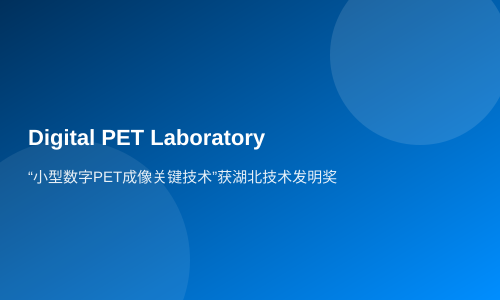

“小型数字PET成像关键技术”获湖北技术发明奖
2月25日，2013年度湖北省科学技术奖颁奖典礼举行，由华中科技大学PET仪器开发与多模医学成像实验室同苏州瑞派宁科技有限公司联合申报的研究成果——“小型数字PET成像关键技术”荣获湖北省...
科技日报讯 （记者吴红月）2月25日，2013年度湖北省科学技术奖颁奖典礼举行，由华中科技大学PET仪器开发与多模医学成像实验室同苏州瑞派宁科技有限公司联合申报的研究成果——“小型数字PET成像关键技术”荣获湖北省技术发明奖一等奖。
“小型数字PET成像关键技术”以PET实验室自主发明的MVT（多电压阈值）方法为基础，经过数十名研究人员多年研究，先后完成了电子学、探测器、系统三个层面的技术创新，用新的知识创造出新的技术，第一次从源头上解决了PET脉冲信号数字化这一世界性难题。本着以最快速度把新技术转化成产品造福社会的初心，实验室不停留在以专利和文章作为评价标准，而是直面实际而迫切的社会需求，把产业化当成了更高层次的目标。苏州瑞派宁科技有限公司以其先进的产品创新理念和扎实的社会服务精神，成为了实验室实现这一目标的最大助力。创新方法到创新技术再到创新仪器的产业化之路，因为有市场需求指引和企业标准的推动，找到了一条最快的直达通道。2010年，世界上首台全数字PET样机——Trans-PET在实验室和瑞派宁的共同努力下问世。
据悉，“数字PET成像关键技术”是今年湖北省科学技术奖中核医学成像领域唯一获得该奖项的研究成果，能够从科教大省的诸多竞争者中脱颖而出，斩获这一含金量极高的奖项，这对于实验室和瑞派宁一同践行产学研用相结合的发展思路是极大的鼓励。
相关链接